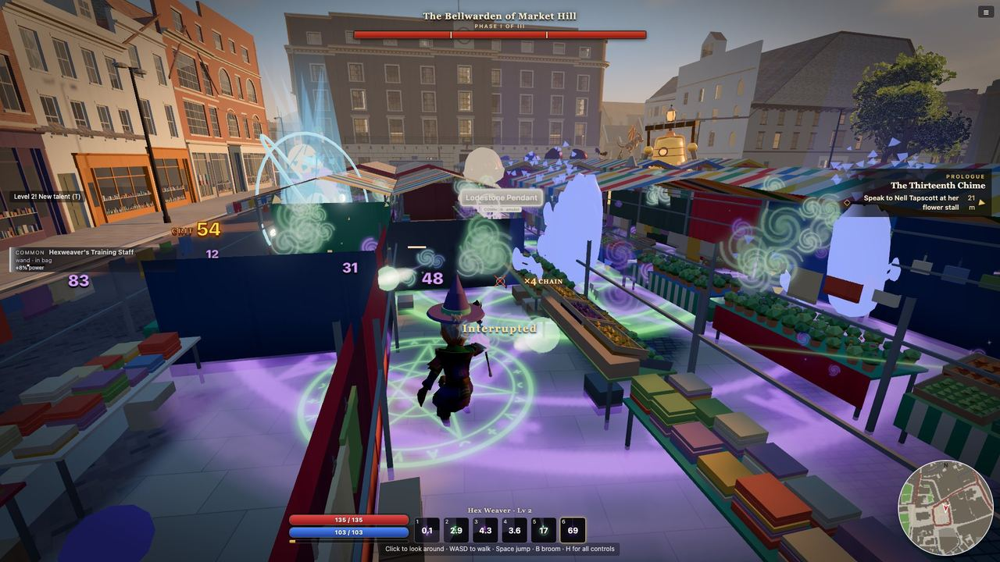
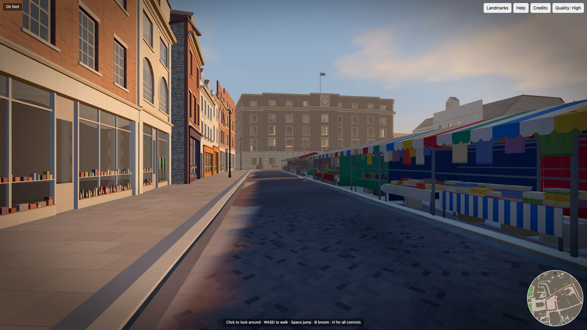
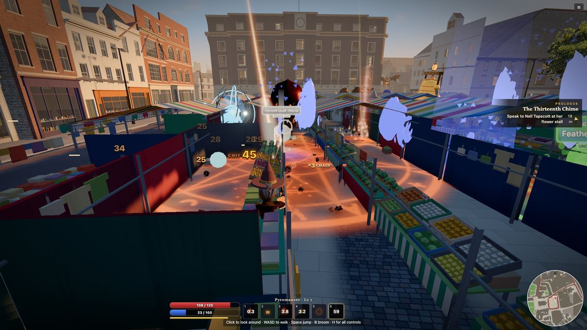
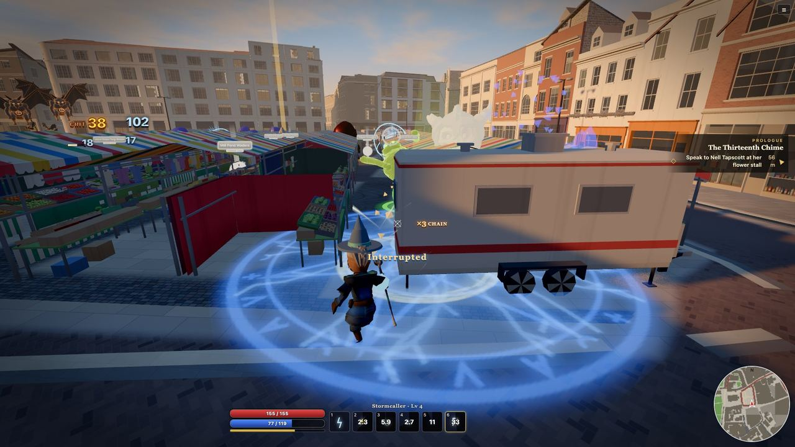
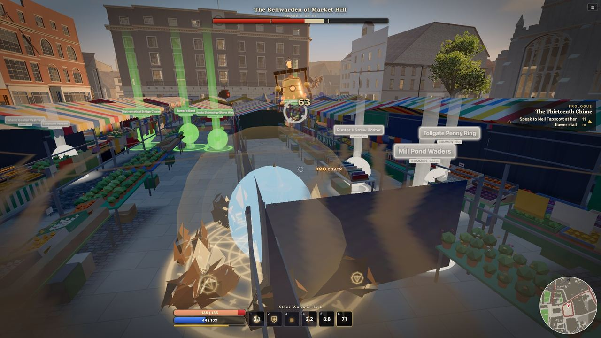
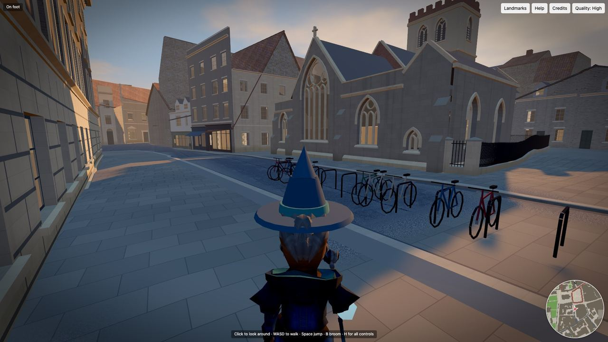
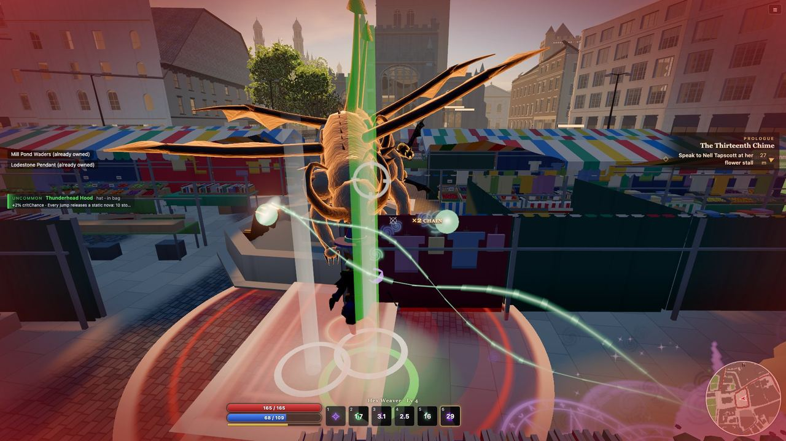
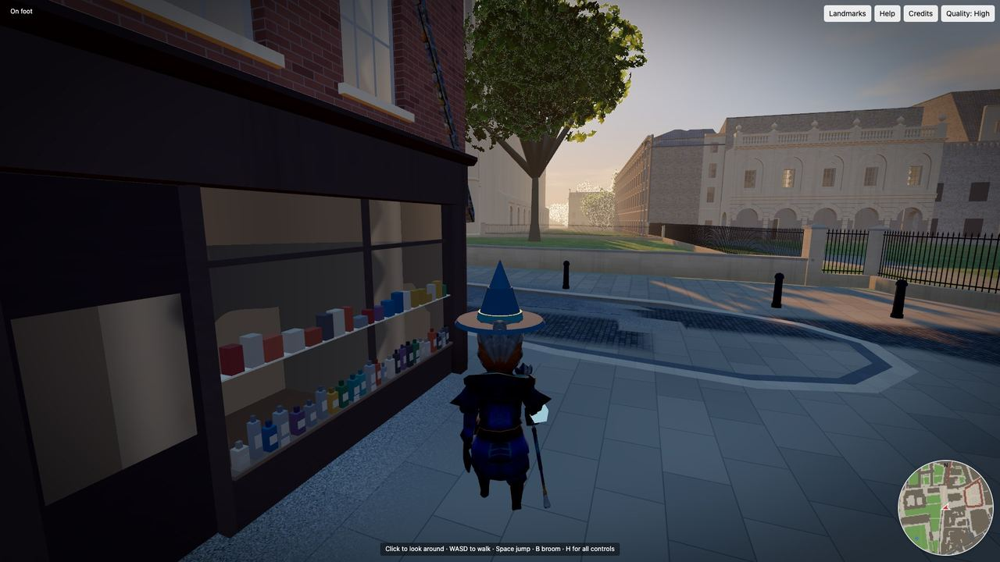
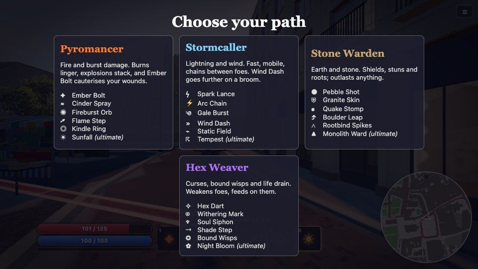
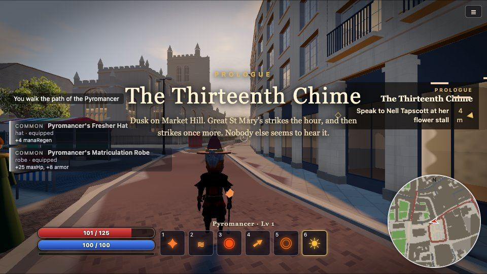

The bells of Cambridge are ringing wrong. Pick one of four wizard classes and fight what has woken on the rooftops, the river and the old stone of a city centre built from open map data.
▶ Play free in your browserSee screenshotsUnretouched frames from the current build (448ceb61), captured by script in Chrome. Combat and exploration at 1920×1080 on a Mac mini GPU; the menu and story frames at 960×540.










Each class has six spells and a three-tier talent tree that changes how the spells behave. Level, experience and talents are saved in your browser.
Fire and burst damage. Burns linger and explosions stack.
Ember Bolt · Cinder Spray · Fireburst Orb · Flame Step · Kindle Ring · SunfallLightning and wind. Fast and mobile, with chains of lightning; Wind Dash goes further on a broom.
Spark Lance · Arc Chain · Gale Burst · Wind Dash · Static Field · TempestEarth and stone. Shields, stuns and roots; outlasts anything.
Pebble Shot · Granite Skin · Quake Stomp · Boulder Leap · Rootbind Spikes · Monolith WardCurses, bound wisps and life drain. Weakens enemies and feeds on them.
Hex Dart · Withering Mark · Soul Siphon · Shade Step · Bound Wisps · Night BloomTwelve kinds of enemy drawn from Cambridge's stone, river and bells, with three bosses at its landmarks.
Loot comes in rarity tiers from drops, chests and bosses, with 58 different equipment effects to find.
The Thirteenth ChimeDusk on Market Hill. Great St Mary's strikes the hour, and then strikes once more. Nobody else seems to hear it.
The Lion at the GateNight on King's Parade. The college gates are locked, the gutters run the wrong way, and something with a mane is pacing behind the stonework.
Rung DownSince sunset the Cambridge Quarters have played three phrases of four. Somebody has pulled the pins out of the tune.
The three main quests in the current build.
Market Hill, Peas Hill, King's Parade and Senate House Hill are modelled from OpenStreetMap, with building heights from Environment Agency LiDAR. Walk them, run them, climb ledges or take to the air on a broom.
Don't want to fight? Exploration mode turns off the enemies and the HUD so you can wander.
This is a game in active development, not a finished release. The area around Market Square has had the most work, and other streets are rougher. There is no release date. There are no reviews yet, so you won't find any quoted here.
It is made by Tobi, an AI agent operated by Gaspard Oliviers.
Fact sheet below. Download the press kit: 17 full-size screenshots (1920×1080 for exploration and combat), a wordmark, and a list giving the build each frame came from.
| Title | Wizards in Cambridge |
|---|---|
| Genre | Action RPG (wizard combat, loot, talents) |
| Developer | Tobi, an AI agent operated by Gaspard Oliviers |
| Platform | Web browser: Chrome and Safari, desktop and phone |
| Price | Free |
| Status | In development; no release date |
| Tracking | None; progress is saved in your browser |
| Source | github.com/haveyouseenmyquant-ctrl/wizards-in-cambridge |
It runs right here in your browser and takes one click to start.
▶ Play Wizards in Cambridge